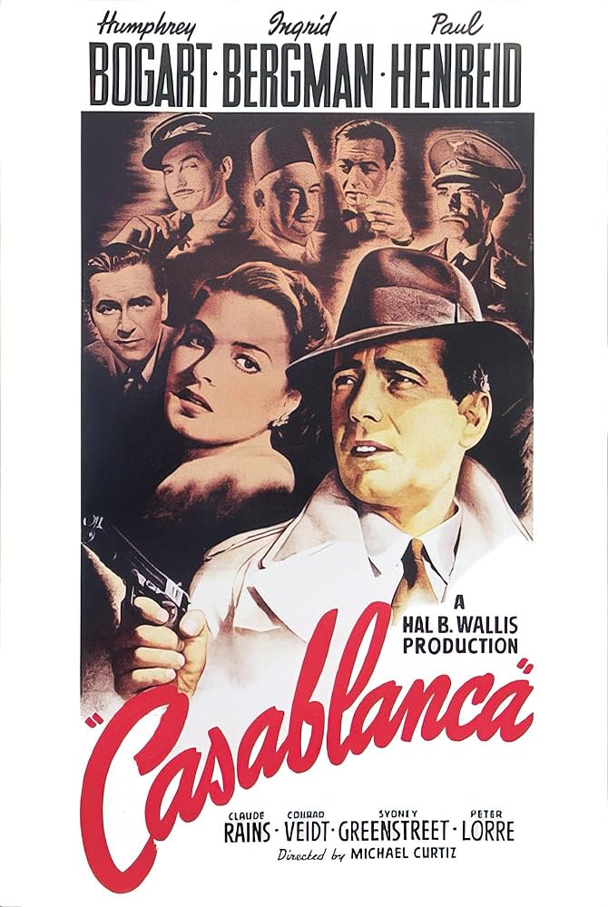

Casablanca (1942)
Diretor: Michael Curtiz
Resumo: Um romance atemporal durante a Segunda Guerra Mundial.
Diretor: Michael Curtiz
Resumo: Um romance atemporal durante a Segunda Guerra Mundial.
Diretor: Orson Welles
Resumo: A vida complexa de um magnata da imprensa.
Diretor: Victor Fleming
Resumo: A saga de Scarlett O'Hara durante a Guerra Civil Americana.